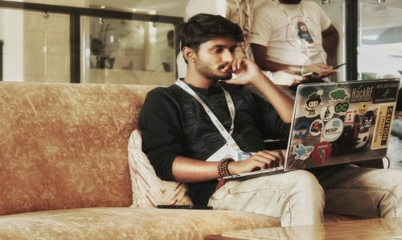
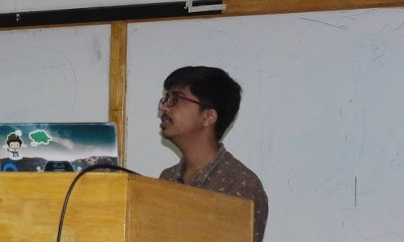
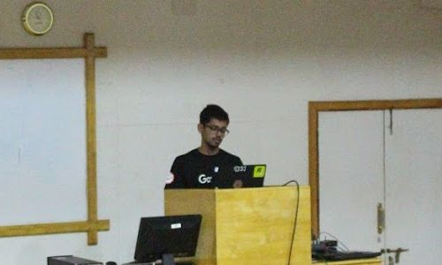
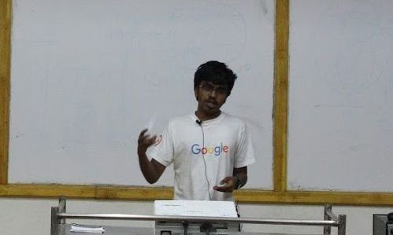

WELCOME NOTE & DISSECTING ANDROID APK- by Abhishek J M
 The welcome note includes an overview of the team bi0s, its aim to make people aware of cybersecurity, how ctfs(capture the flag contests) helps you if you are getting started with cybersecurity.Then coming to the main talk dissecting android apk includes the Malware attacks on android-stealing sms,gps identification, exploiting etc; Reversing apps-understanding how the malware works, securing ourselves from these attacks by keeping the apps up-to-date, avoiding the third party apps etc.
INTRODUCTION TO CRYPTOGRAPHY- by Ashutosh Ahelleya
 The talk was held on cryptography and its uses.Dealt with the development of crypto over time and need for various domains existing in cryptography.Various crypto encryption and decryption techniques and theorems such as "Shannon's Theorem of perfect survey" were emphasized.Cryptanalysis and breaching through it can be considered as the corpus of the talk.Overall the talk was enriched with the great apprehension of cryptography and talks of these kinds are always a delight in the field of cyber-security and it's awareness.
REVERSING 101- by Akshay Ajayan
 REVERSING101 is a talk that speaks about the Assembly language.The talk includes why should we care about Reversing -From a security perspective, it helps to find Vulnerabilities; it Gives clearer view on how the program interacts with hardware; How data is stored, written and read.The talk covered the basics of X86-General purpose registers, Segment registers, Instruction pointer, EFLAGS etc.The talk left a good impression on the audience about reversing who are getting started with cybersecurity.
THE ART OF EXECUTING JAVASCRIPT- by Heeraj Nair
The talk was held on XSS.XSS(Cross-site scripting enables attackers to inject client-side scripts into web pages viewed by other users) vulnerability being the major aspect as it covers 75% of cyber attacks.This talk emphasizes the need for social awareness and the relative damage caused by the attack.Talks of these kinds are always enthusiastic and fruitful considering the threats of web security! The talk covered the basic idea of various types of XSS's and demos were given regarding how Reflected and stored XSSs works.Overall the talk got great attention in the minds of the people who attended for the Meet-up.
PICKING APART THE STUXNET: World's First Cyber Weapon- by Siddharth Muralee
 The talk covered how the STUXNET worm infects computers and how it spreads across the network of computers.Once inside a network, it uses a variety of mechanisms to propagate to other machines within that network and gain system privileges once it has infected those machines.These mechanisms include both known, patched vulnerabilities and four "zero-day exploits".The speaker left the audience inspired, explained to them how important it is to learn cybersecurity and extend their support in protecting the nation from these kinds of cyber attacks.